この章ではPythonの概要について学習します。
Pythonとは、オランダ人のグイド・ヴァンロッサムによって開発されたオープンソースのオブジェクト指向スクリプト言語です。
Pythonには一般的に以下の特徴があります。
オブジェクトとは、世の中に存在するモノ、コトを表し、属性（データ）と処理を持ちます。属性や処理をオブジェクトとしてまとめて扱うことで可読性や拡張性などを高めることができます。
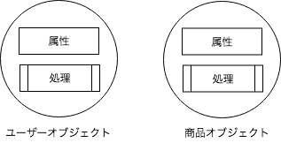
プログラムは人間がコンピュータに出す命令なので人間の言葉で記述されますが、コンピュータは人間の言葉を読み取れません。そのため、機械語と呼ばれるコンピュータが読み取れる言語に翻訳する必要があります。
[コンパイラ型言語の場合]
C言語などのコンパイラ型言語はプログラムをコンパイルという作業を通して機械語に翻訳します。以下の内容で'hello.c'というファイルを作成します。
#include "stdio.h"
int main(int argc, char const *argv[]) {
printf("Hello World!");
return 0;
}
プログラミング後、コンパイルを行います。
% gcc -o hello hello.c
コンパイルして作成された機械語のファイルを指定して実行します。
% ./hello
Hello World!
[インタプリタ型言語の場合]
インタプリタ型は実行しながら1行ずつ翻訳します。以下の内容でhello.pyというファイルを作成します。
print("Hello World!")
プログラミング後、すぐに実行することができます。
python hello.py
Hello World!
このようにインタプリタ型の言語ではプログラミング後、簡単に実行することができます。簡単に実行できる反面、文法的なエラーなどがあった場合に、実行するまでわからないなどの欠点があります。
機械語はプラットフォームによって異なります。そのため、機械語に翻訳すると言ってもそれぞれの環境に合わせて翻訳する必要があります。PythonではPVM（Python Virtual Maichine）と呼ばれる仮想マシンを用いて、各プラットフォームの差を埋めています。
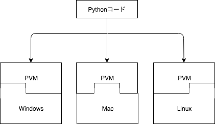
これにより、プラットフォームの違いを意識せずにPythonを扱うことができるようになっています。
Pythonの構文は非常にシンプルな構成となっております。Javaと比較してみましょう。
[Javaの場合]
public class Sample {
public static void main(String[] args) {
int age = 20;
if(age < 20) {
System.out.println("You are not adult");
} else {
System.out.println("You are adult");
}
}
}
[Pythonの場合]
age = 20
if(age < 20):
print("You are not adult")
else:
print("You are adult")
見比べるとPythonの構文には以下の特徴があることがわかると思います。
{}ではなく、インデントで指定するこのようにPythonはシンプルに記述でき、シンプルに実行できることが特徴といえるでしょう。
この章ではPythonの環境構築について学習します。
Pythonの公式サイトにアクセスします。
https://www.python.org/
公式サイトにアクセスすると、次のような画面が表示されます。メニューの[Downloads]をクリックすると、最新版のPythonが表示されるのでクリックします。
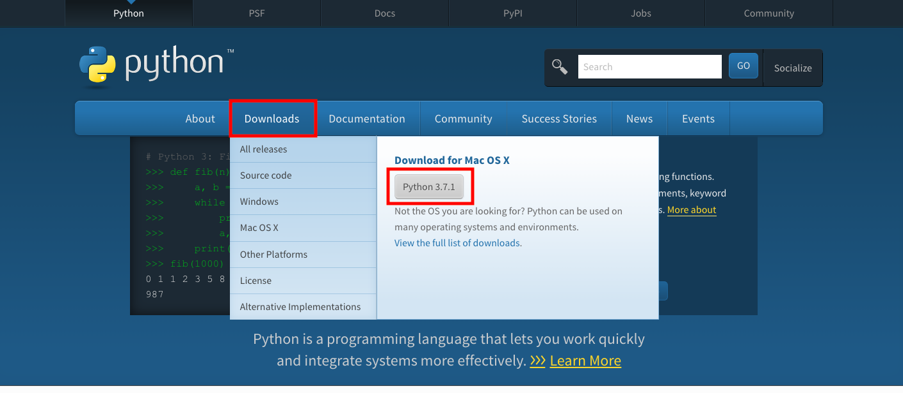
ダウンロードリンクが表示されるので、クリックしてダウンロードします。ここでは3.7をインストールしましょう。
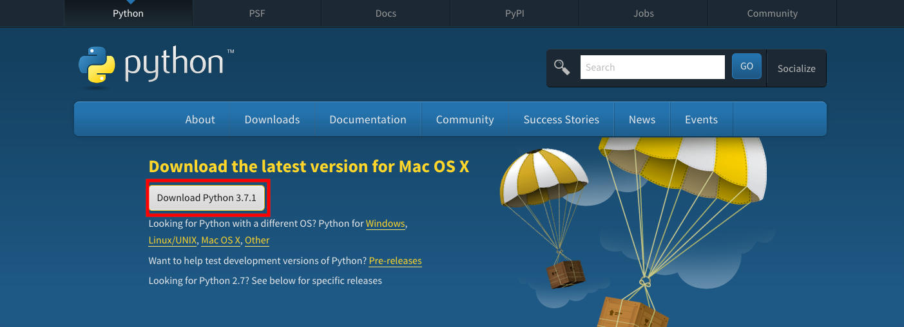
ダウンロードしたファイルを実行すると、インストーラが起動します。[Add Python 3.7 to PATH]にチェックをいれ、[Install Now]をクリックします。
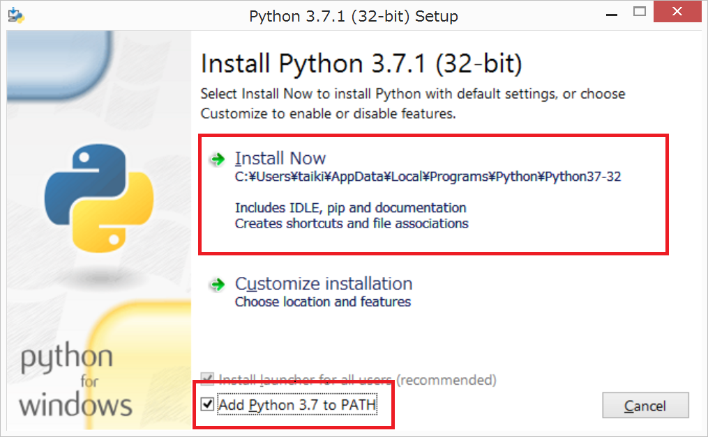
インストールが開始されるので、しばらく待ちます。
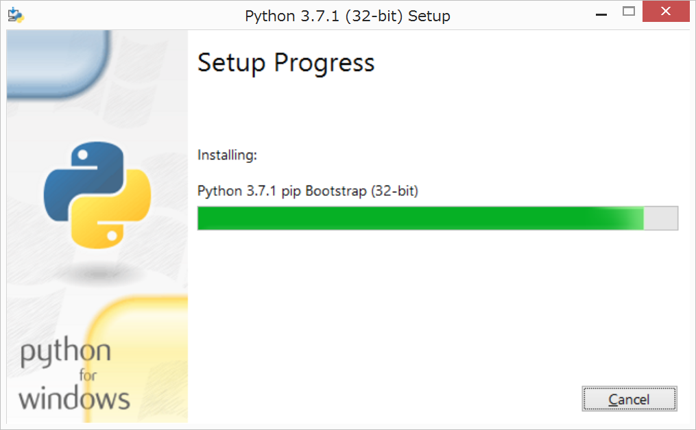
正常に終了したらCloseボタンをクリックして、インストーラを終了させます。
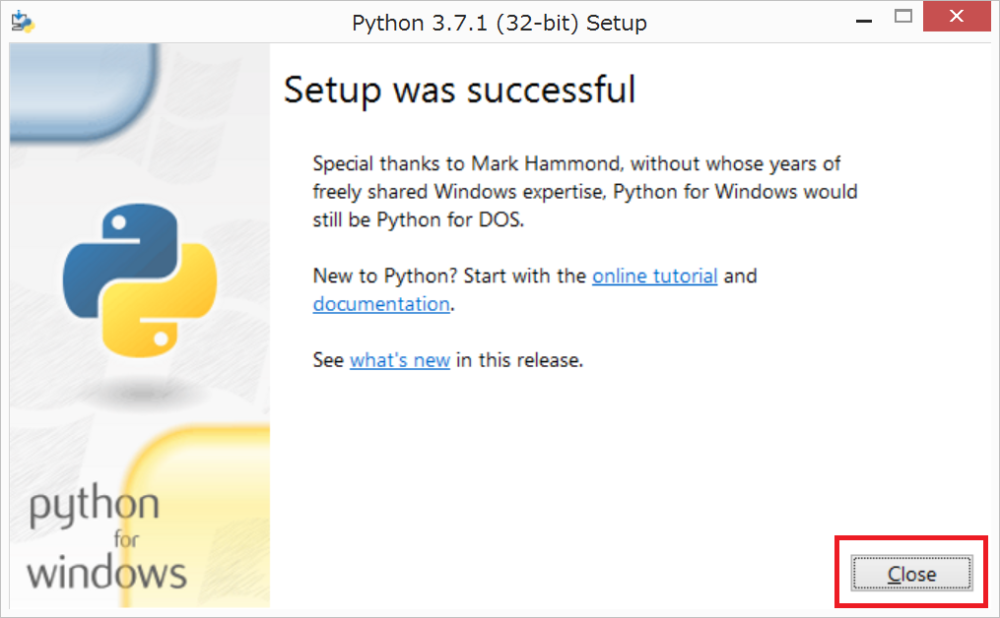
インストールが完了したら以下のコマンドを実行し、Pythonがインストールされたことを確認しましょう。
% python --version
Python 3.7.1
これでPythonのインストールが完了しました。
Pythonを実行するにはまず、ソースコードを作成する必要があります。hello.pyというファイル名で、以下の内容を保存してください。
print("Hello World!")
作成したソースコードはpython ソースコードのパスで実行することができます。
% python sources/02/hello.py
Hello World!
print関数は、引数に渡された値を画面に出力します。
Pythonを実行するには、上記の方法の他にインタプリタ（REPL）を起動する方法があります。REPLとはRead-eval-print loopの略で、プログラムを読んで、評価して、出力するを繰り返すことを意味します。pythonコマンドで起動します。
% python
Python 3.7.1 (default, Nov 27 2018, 17:00:53)
[Clang 10.0.0 (clang-1000.10.44.4)] on darwin
Type "help", "copyright", "credits" or "license" for more information.
>>> print("Hello World!")
Hello World!
Pythonの動きを確認したい時などに重宝します。
IPythonとは、デフォルトのPythonインタプリタを拡張したものです。pipというPyhtonのパッケージマネージャを使用します。
% pip install ipython
インストールが完了したら、ipythonコマンドで起動します。
% ipython
Python 3.7.1 (default, Nov 27 2018, 17:00:53)
Type 'copyright', 'credits' or 'license' for more information
IPython 7.1.1 -- An enhanced Interactive Python. Type '?' for help.
In [1]: print("Hello World!")
Hello World!
IPythonにはデフォルトのPythonインタプリタには無い便利な機能がありますので、いくつか紹介します。 - 補完機能 - イントロスペクション - OSコマンド実行
IPythonには入力補完機能があります。以下のようにprまで入力し、Tabキーを押下してください。
In [2]: pr
候補がいくつか表示されます。さらにTabキーを押下して、printにフォーカスがあたったら、Enterキーで選択します。万一、キーワードや関数名を忘れてしまっても安心です。また、関数名が長い場合などは入力補助にも使用することができます。
イントロスペクションは変数や関数の情報を出力させることができます。関数名や変数名の後に?を入力して実行します。
In [2]: print?
Docstring:
print(value, ..., sep=' ', end='\n', file=sys.stdout, flush=False)
Prints the values to a stream, or to sys.stdout by default.
Optional keyword arguments:
file: a file-like object (stream); defaults to the current sys.stdout.
sep: string inserted between values, default a space.
end: string appended after the last value, default a newline.
flush: whether to forcibly flush the stream.
Type: builtin_function_or_method
変数の情報も確認してみましょう。
In [4]: message?
Type: str
String form: Hello World!
Length: 12
Docstring:
str(object='') -> str
str(bytes_or_buffer[, encoding[, errors]]) -> str
Create a new string object from the given object. If encoding or
errors is specified, then the object must expose a data buffer
that will be decoded using the given encoding and error handler.
Otherwise, returns the result of object.__str__() (if defined)
or repr(object).
encoding defaults to sys.getdefaultencoding().
errors defaults to 'strict'.
デバッグ時などに重宝する機能です。
IPythonを起動したまま、OSコマンドを実行することができます。!をOSコマンドの先頭に入力して実行します。
n [2]: !ping python.org
PING python.org (23.253.135.79): 56 data bytes
64 bytes from 23.253.135.79: icmp_seq=0 ttl=39 time=186.576 ms
64 bytes from 23.253.135.79: icmp_seq=1 ttl=39 time=186.833 ms
64 bytes from 23.253.135.79: icmp_seq=2 ttl=39 time=186.496 ms
この章ではPythonの基本文法について学習します。
コメントはプログラムとして評価されない文章で、ソースコードの説明などに使用します。
Pythonでコメントをつけるときは#を使用します。2章で作成したhello.pyにコメントをつけてみましょう。
# greeting
print("Hello Wolrd!")
ファイルを作成したら実行します。
% python sources/03/hello.py
Hello World!
出力結果に何も変化がないことがわかると思います。
また、複数行のコメントを描きたい場合は、'''で囲みます。
'''
greeting
to You
'''
print("Hello World!")
コメント機能は開発者がソースコード上で取れる数少ないコミュニケーションの一つです。 使用上の注意点やソースの意図の説明など、効果的なコメントを残すことを心がけるようにしましょう。
Pythonには主に以下の演算子があります。
算術演算子は計算をするための記号です。
| 演算子 | 説明 |
|---|---|
| + | 加算、文字列結合 |
| - | 減算 |
| * | 乗算 |
| / | 浮動小数点の除算 |
| // | 整数の除算（切り捨て） |
| % | 剰余算 |
| ** | 指数 |
実際に計算してみましょう。
print(2 + 3) # 5
print(3 - 2) # 1
print(3 * 2) # 6
print(3 / 2) # 1.5
print(3 // 2) # 1
print(3 % 2) # 1
print(3 ** 2) # 9
print("Hello" + " World!") # Hello World!
Pythonで算術演算子を扱う場合、ひとつ注意点があります。 +演算子を使って、数値と文字列の結合はできない ということです。 他の言語では可能である場合もあるので注意しましょう。
# エラーが発生する
# print("1 + 1 = " + 1 + 1)
# 数値を文字列に変換した上で、文字列結合する
print("1 + 1 = " + str(1 + 1))
Pythonには、インクリメント、デクリメント演算子もありませんので、注意してください。
比較演算子は比較をするための記号です。比較結果は論理値で返されます。
論理値とは真偽を表す値で、TrueまたはFalseが定められています。
| 演算子 | 説明 |
|---|---|
| < | 小なり |
| > | 大なり |
| <= | 以下 |
| >= | 以上 |
| == | 等しい |
| != | 等しくない |
実際に比較してみましょう。
print(3 < 2) # False
print(3 > 2) # True
print(3 <= 2) # False
print(3 >= 2) # True
print(2 == 2) # True
print(3 != 2) # True
print("Hello" == "Hello") # True
Pythonでは異なる型の値の比較はFalseになります。
print(1 == '1') # False
論理演算子は、真偽を組み合わせた結果を論理値で返します。
| 演算子 | 説明 |
|---|---|
| and | かつ |
| or | または |
| not | 否定 |
print(True and True) # True
print(True and False) # False
print(True or True) # True
print(True or False) # True
print(not True) # False
print(not False) # True
論理演算子は多くの場合、比較演算子と組み合わせて使用されます。
print(3 > 2 and 4 > 5) # False
変数とは、プログラムで扱われるデータを一定期間記憶し、必要なときに利用可能にするデータ格納場所に名前をつけたものです。[変数名 = 値]という書き方で値を代入します。
# 変数名 = 値
age = 20
ageという名前の箱に20という値を代入したとイメージするとわかりやすいと思います。
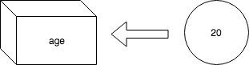
変数を使用する時は、変数名をそのまま指定します。
age = 20
print(age) # 20
予約語とは、プログラミング言語の仕様で意味が定められ、変数名や関数名として利用できない単語のことです。 Pythonでは以下の予約語があります。
False, None, True, and, as, assert, break, class, continue, def, del, elif, else, except, finally,
for, from, global, if, import, in, is, lambda, nonlocal, not, or, pass, raise, return, try, while,
with, yield など
例えば以下のようにするとエラーとなります。
and = 10
print(and)
この章ではPythonのデータ型について学習します。
1や"Hello World!"というようなデータには型があります。
例えば'1'は整数型、"Hello World!"は文字列型です。
全体像としては以下の図のようになっています。
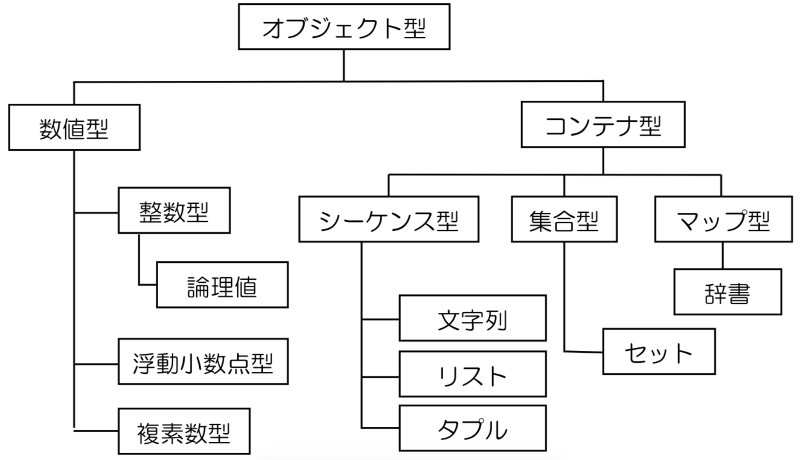
文字列と数値は結合できなかったりと、データ型を意識しながらプログラミングしていくことはとても大切になっていきます。
数値型は以下の3種類に分けることができます。
複素数は当テキストでは扱いません。
整数型は離散数値を表します。
i1 = 10
i2 = -4
print(type(i1)) # <class 'int'>
print(type(i2)) # <class 'int'>
論理型は真偽値（True or False）のことです。 Pythonでは数値を真偽値と同じ物として扱います。
print(0 == False) # True
print(1 == True) # True
print(2 == True) # False
他言語とは仕様が異なる場合があるので注意しましょう。
浮動小数点型は小数値を表します。
f1 = 0.5
f2 = - 1 / 3
print(type(f1)) # <class 'float'>
print(type(f2)) # <class 'float'>
コンピュータでは0.3333...のような循環小数や、とても小さい数を正確に扱うことができません。そういう値を扱う場合は、近似値 を使用します。そのため、小さい小数値を扱う場合、計算結果に誤差が生じる可能性があることを留意しておいてください。
f1 = 10 / 3
print(f1) # 3.3333333333333335
文字列型を扱うには"（ダブルクォーテーション）または、'（シングルクォーテーション）で囲みます。
first_name = "Taro"
last_name = 'Sato'
print(type(first_name)) # <class 'str'>
print(type(last_name)) # <class 'str'>
他の言語ではダブルクォーテーションとシングルクォーテーションを区別することもありますが、Pythonでは同一に扱います。
基本的にはプログラム内で統一すると良いでしょう。 ただし、文字列内でダブルクォーテーションを使いたい、または、シングルクォーテーションを使いたい場合は、別のほうを使用することで上手に処理することができます。
# 以下のように書くと文字列の終了が正常に機能しない。
message = 'Hello, 'Python'.'
# ダブルクォーテーションを使用することで、対応できる。
message = "Hello, 'Python'."
/（バックスラッシュ）を使用することで、文字の意味を消去することができます。
message = 'Hello, \'Python\'.'
print(message) # Hello, 'Python'.
シングルクォーテーションの前にバックスラッシュをつけることで、シングルクォーテーションは意味を失い、ただの文字列として扱うことができました。
Windowsの場合はバックスラッシュではなく、¥を使用します。
None型は少し特殊で、オブジェクトが存在しないことを意味します。
n = None
print(n) # None
print(type(n)) # <class 'NoneType'>
他言語では多くの場合、nullと表現されます。
リストは複数の要素から構成され、順番に値を保持しています。
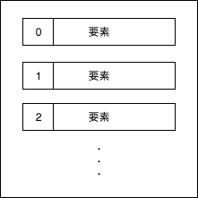
以下のような特徴があります。
リストを作成する場合は、[]を使用します。
# リストの作成
points = [80, 75, 90, 100]
# 空のリストの作成
empty = []
print(points) # [80, 75, 90, 100]
リストの一つ一つの要素を参照するには、以下のようにインデックス番号を指定します。
points = [80, 75, 90, 100]
print(points[0]) # 80
print(points[1]) # 75
print(points[-1]) # 100
リストのインデックスは0から始まることに注意してください。
リストの一部のみを切り出して別のリストを作成することができます。
[開始:終了:増分]という指定をします。
points = [80, 75, 90, 100]
# 0から2までの値を1つおきに
print(points[0:2:1]) # [80, 75]
# 省略することもできます
print(points[:2:]) # [80, 75]
# 先頭から末尾まで2つおきに
print(points[::2]) # [80, 90]
リストの要素に指定の値が存在するか調べることができます。
値 in リストという構文を使用します。
points = [80, 75, 90, 100]
exist10 = 10 in points
exist75 = 75 in points
print(exist10) # False
print(exist75) # True
リストの長さ（要素数）を取得することができます。 len関数を使用します。
points = [80, 75, 90, 100]
print(len(points)) # 4
リスト要素中の最大値を取得するには、max関数を使用します。
points = [80, 75, 90, 100]
print(max(points)) # 100
リスト要素中の最小値を取得するには、min関数を使用します。
points = [80, 75, 90, 100]
print(min(points)) # 75
リストの要素の順番を並び替えることができます。 sorted関数を使用します。
points = [80, 75, 90, 100]
print(sorted(points)) # [75, 80, 90, 100]
# 引数にreverse=Trueを指定すると降順になる
print(sorted(points, reverse=True)) # [100, 90, 80, 75]
リストの既存の要素を更新することができます。 リストのインデックスで指定し、値を代入することで更新します。
points = [80, 75, 90, 100]
points[1] = 65
print(points) # [80, 65, 90, 100]
リストに要素を追加するには、appendメソッドを使用します。
points = [80, 75, 90, 100]
points.append("new element")
print(points) # [80, 75, 90, 100, 'new element']
appendメソッドは末尾に要素を追加しますが、間に挿入することもできます。その場合は、insertメソッドを使用します。
points = [80, 75, 90, 100]
# 第一引数：要素番号
# 第二引数：値
points.insert(2, "new element")
print(points) # [80, 75, 'new element', 90, 100]
リストの要素を削除するにはremoveメソッド、またはdel文を使用します。
points = [80, 75, 90, 100]
points.remove(75)
print(points) # [80, 90, 100]
del points[1]
print(points) # [80, 100]
タプルは複数の要素から構成され、順番に値を保持しています。 リストとほぼ同様の機能を有しています。
以下のような特徴があります。
変更の必要がないようなデータはタプルで扱うのが好ましいでしょう。
タプルを作成する場合は()を使用します。
# タプルの作成
points = (80, 75, 90, 100)
print(points) # (80, 75, 90, 100)
# 削除しようとするとエラーとなる
# points.remove(75)
タプルの一つ一つの要素を参照するには、リストと同じようにインデックス番号を指定します。
points = (80, 75, 90, 100)
print(points[0]) # 80
print(points[1]) # 75
print(points[-1]) # 100
タプルからリストを新しく作り出すことができます。 その場合は、list関数を使用します。
points = (80, 75, 90, 100)
points_list = list(points)
print(points_list) # [80, 75, 90, 100]
print(type(points_list)) # <class 'list'>
逆にリストからタプルを新しく作り出すこともできます。 その場合は、tuple関数を使用します。
points = [80, 75, 90, 100]
points_tuple = tuple(points)
print(points_tuple) # (80, 75, 90, 100)
print(type(points_tuple)) # <class 'tuple'>
セットは複数のユニークな要素から構成され、順番は保持しません。 リストとほぼ同様の機能を有しています。
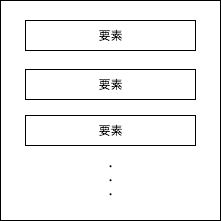
以下のような特徴があります。
セットを作成する場合は、{}を使用します。
# セットの作成
points = {80, 75, 90, 100}
# 空のセット {}では空のディクショナリになる
empty = set()
# 順番が作成時と異なる
print(points) # {80, 90, 75, 100}
順番を保持していないため、リストやタプルのようにインデックスを利用した個別参照はできません。 セットの値を参照したい場合はfor文を使用して全要素を取得する必要があります。
points = {80, 75, 90, 100}
for point in points :
print(point)
# 80
# 90
# 75
# 100
for文については次章にて詳しく解説します。
セットの追加をする場合は、addメソッドを使用します。
points = {80, 75, 90, 100}
points.add("new element")
# 重複する値を追加しても無視される
points.add(80)
print(points) # {100, 75, 'new element', 80, 90}
セットを削除する場合は、removeメソッドを使用します。
points = {80, 75, 90, 100}
points.remove(75)
print(points) # {100, 80, 90}
ディクショナリは複数の値とキーを組み合わせた要素から構成され、順番は保証されません。
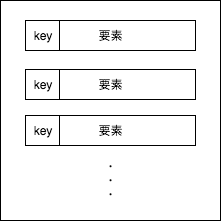
以下のような特徴があります。
ディクショナリを作成する場合は、{key:value}を使用します。
# ディクショナリの作成
points = {"math" : 80,
"english" : 75,
"science" : 90,
"history" : 100}
print(points) # {'math': 80, 'english': 75, 'science': 90, 'history': 100}
ディクショナリの要素を参照する場合は、キーを指定します。
points = {"math" : 80,
"english" : 75,
"science" : 90,
"history" : 100}
print(points["math"]) # 80
print(points["history"]) # 100
# 存在しないキーを参照しようとするとエラーとなる
# print(points["geographic"])
他にもgetメソッドを使用する方法があります。
points = {"math" : 80,
"english" : 75,
"science" : 90,
"history" : 100}
print(points.get("english")) # 75
# 取得できない場合はNoneとなる
print(points.get("geographic")) # None
# 第二引数に値を設定することで、存在しない場合にその値を返す
print(points.get("geographic", 0)) # 0
また、キーの一覧や、値の一覧を取得することもできます。
points = {"math" : 80,
"english" : 75,
"science" : 90,
"history" : 100}
keys = points.keys()
values = points.values()
print(keys) # dict_keys(['math', 'english', 'science', 'history'])
print(values) # dict_values([80, 75, 90, 100])
キーと値をタプル形式で取得したい場合は、itemsメソッドを使用します。 ```python points = {"math" : 80, "english" : 75, "science" : 90, "history" : 100}
items = points.items()
print(items) # dict_items([('math', 80), ('english', 75), ('science', 90), ('history', 100)]) ```
ディクショナリの要素を更新する場合は、キーを指定し、新しい要素を代入します。
points = {"math" : 80,
"english" : 75,
"science" : 90,
"history" : 100}
points["math"] = 95
print(points) # {'math': 95, 'english': 75, 'science': 90, 'history': 100}
ディクショナリの要素を追加する場合は、新しいキーを指定し、要素を代入します。
points = {"math" : 80,
"english" : 75,
"science" : 90,
"history" : 100}
points["geographic"] = 95
print(points) # {'math': 80, 'english': 75, 'science': 90, 'history': 100, 'geographic': 95}
ディクショナリの要素を削除する場合は、del文を使用します。
points = {"math" : 80,
"english" : 75,
"science" : 90,
"history" : 100}
del points["english"]
print(points) # {'math': 80, 'science': 90, 'history': 100, 'geographic': 95}
この章では制御構文について学習します。
条件分岐とは条件によって処理内容を変更する仕組みです。
条件分岐をさせたい場合は、if文を使用します。
point = 65
if(point > 60):
# pointが60より大きい時のみ実行される
print("success")
if-else文を使用することで、条件が真の時の処理と、偽の時の処理をそれぞれ記述することができます。
point = 65
if(point > 60):
# pointが60より大きい時のみ実行される
print("success")
else:
# pointが60以下の時のみ実行される
print("fail")
elif文を使用することで、分岐条件を追加することができます。
point = 55
if(point > 80):
# pointが80より大きい時のみ実行される
print("success")
elif(point > 60):
# pointが80以下で、かつ、60より大きい時のみ実行される
print("good")
else:
# pointが80以下で、かつ、60以下の時のみ実行される
print("fail")
繰り返しとは同じ処理を繰り返す仕組みです。
繰り返しをしたい場合はwhile文条件に一致する内は、同じ処理を繰り返すことができます。
count = 0
while(count < 5):
# countが5になるまで繰り返す
count += 1
print(count)
while文中にcontinueを記述すると、以降の処理はスキップされ、次の繰り返しが開始されます。
count = 0
while(count < 5):
count += 1
if(count == 2):
continue
# countが2の時はスキップされる
print(count)
while文中にbreakを記述すると、繰り返しを終了させることができます。
count = 0
while(count < 10):
count += 1
if(count == 2):
# countが2のときに繰り返しを終了する（以降は繰り返されない）
break
print(count)
while-else文を使用することで、while文が正常終了した時に処理を追加することができます。 正常終了とはbreakを使わずに終了することを表します。
count = 0
while(count < 4):
count += 1
if(count == 5):
break
print(count)
else:
# whileが正常終了した場合に、実行される
print("success")
for文を使うと繰り返し可能なオブジェクトの要素数の数だけ、同じ処理を繰り返すことができます。 繰り返し可能なオブジェクトにはリスト、タプル、ディクショナリ、セット、文字列などがあります。
points = [80, 75, 90, 100]
for point in points :
# pointsの要素数の回数だけ繰り返される
# pointにはpointsの要素が順番に代入される
print(point)
for文中にcontinueを記述すると、以降の処理はスキップされ、次の繰り返しが開始されます。
points = {"math" : 80,
"english" : 75,
"science" : 90,
"history" : 100}
for point in points.items():
if(point[0] == "english"):
continue
# englishの時、スキップされる
print(point)
for文中にbreakを記述すると、繰り返しを終了させることができます。
points = {"math" : 80,
"english" : 75,
"science" : 90,
"history" : 100}
for point in points.items():
if(point[1] == 90):
# 90がある時に、繰り返しを終了する
break
print(point)
for-else文を使用することで、for文が正常終了した時に処理を追加することができます。 正常終了とはbreakを使わずに終了することを表します。
points = {"math" : 80,
"english" : 75,
"science" : 90,
"history" : 100}
for point in points.items():
if(point[1] == 85):
break
print(point)
else:
# forが正常終了した場合に、実行される
print("success")
range関数は、数値シーケンスを生成してくれます。
# 1-9まで出力する
for i in range(1, 10):
print(i)
この章では関数について学習します。
関数とは処理のかたまりに名前をつけたものです。 名前を"呼び出す"ことによって何度でも処理を実行させることができます。
関数の定義にはdefを使用します。
def greet():
print("Hello")
関数は定義するだけでは実行されません。 関数を実行するには関数を"呼び出す"必要があります。
def greet():
print("Hello")
#関数呼び出し
greet() # Hello
greet() # Hello
関数には引数を指定することができます。 引数とは呼び出し側から関数へ値を受け渡す仕組みです。
def add(x, y):
print(x + y)
add(1, 2) # 3
add(2, -3) # -1
関数には戻り値を指定することができます。 戻り値とは関数から呼び出し側へ値を返す仕組みです。
def add(x, y):
return x + y
result1 = add(1, 2)
result2 = add(2, -3)
print(result1) # 3
print(result2) # -1
引数にデフォルト値を定義することができます。
def greet(hour=8):
if(hour >= 6 and hour < 12):
return 'Good Morning'
elif(hour >=12 and hour < 18):
return "Hello"
else:
return "Good Evening"
print(greet()) # Good Morning
print(greet(14)) # Hello
引数受け渡し時に、引数名を指定して値を渡すことができます。
def add(x=10, y= 0):
return x + y
print(add(y=100)) # 110
print(add(x=20, y=10)) # 30
*を使用し、0個以上の値をタプル形式で受け取ることができます。
def add(*elements):
print(elements)
result = 0
for element in elements:
result += element
return result
result1 = add(10, 10, 20, 30)
result2 = add(10, 10)
print(result1) # 70
print(result2) # 20
**を使用し、0個以上の値をディクショナリ形式で受け取ることができます。
def add(**elements):
print(elements)
result = 0
for element in elements.values():
result += element
return result
result = add(x=10, y=20, z=30)
print(result)
docstringの機能を使用することで関数に説明文をつけることができます。 docstringを参照するにはhelp関数やdocを使用する。
def add(x, y):
'''
arg1 : x < 0 return false
arg2 : y < 0 return false
else : return x + y
'''
if(x < 0 or y < 0):
return false
return x + y
help(add)
print(add.__doc__)
IPythonを使用していれば、イントロスペクションの機能で参照することもできる。
In [8]: def add(x, y):
...: '''
...: arg1 : x < 0 return false
...: arg2 : y < 0 return false
...: else : return x + y
...: '''
...: if(x < 0 or y < 0):
...: return false
...:
...: return x + y
...:
In [9]: add?
Signature: add(x, y)
Docstring:
arg1 : x < 0 return false
arg2 : y < 0 return false
else : return x + y
File: ~/<ipython-input-8-616a4d0d9633>
Type: function
スコープとは参照範囲のことを表します。
関数内で定義した変数はローカル変数と呼ばれ、関数外では参照できません。
def greet():
message = "Hello"
print(message) # NameError: name 'message' is not defined
関数外で定義した変数はグローバル変数と呼ばれ、関数内でも参照できます。
message = "Hello"
def greet():
print(message)
greet() # Hello
では以下のように記述した場合、どちらの変数が参照されるでしょうか。
message = "Hello"
def greet():
message = "Good Morning"
greet()
print(message)
関数内でグローバル変数と同じ名前のローカル変数が定義された場合、関数内ではローカル変数が優先されて参照されます。グローバル変数にアクセスしたい場合は、global 変数名を使用します。
message = "Hello"
def greet():
# greet関数内ではグローバル変数のmessageが参照される
global message
message = "Good Morning"
greet()
print(message)
Pythonでは関数もオブジェクトとして扱うことができます。
def greet():
print("Hello")
def run_something(func):
func()
run_something(greet) # Hello
()が関数呼び出しを意味しているため、()が無い場合は関数もオブジェクトとして扱います。
def greet():
print("Hello")
print(type(greet)) # <class 'function'>
関数内に別の関数を定義し、使用することができます。
def multi(x, y):
def add(x, y):
return x + y
result = 0
for i in range(y):
result = add(result, x)
return result
multi(3, 4)
クロージャとは、関数内部の変数を永続的に保持するための仕組みです。
def gen_calc_circle_area(pi):
def calc_circle_area(radius):
return pi * radius ** 2
return calc_circle_area
# 円周率を3で計算するクロージャを生成
calc_circle_area1 = gen_calc_circle_area(3)
print(calc_circle_area1(1)) # 3
print(calc_circle_area1(2)) # 12
# 円周率は3.14で計算するクロージャを生成
calc_circle_area2 = gen_calc_circle_area(3.14)
print(calc_circle_area2(1)) # 3.14
print(calc_circle_area2(2)) # 12.56
基本的に関数は関数名をつけて定義すると学習しましたが、ラムダ式の機能を利用することで、無名の関数を定義することができます。 主に、一時的に使用される関数や、動的に内容を変更する必要がある関数に用いられます。
# 関数名をつけずに定義する
add = lambda x, y: x + y
print(type(add)) # <class 'function'>
print(add(2, 3)) # 5
ラムダ式はどのような時に使うのでしょうか。 filter関数を例にとって考えてみましょう。 filter関数は、第一引数に論理値を返す関数オブジェクト、第二引数にリストを受け取る関数です。 IPythonで確認してみましょう。
In [25]: filter?
Init signature: filter(self, /, *args, **kwargs)
Docstring:
filter(function or None, iterable) --> filter object
Return an iterator yielding those items of iterable for which function(item)
is true. If function is None, return the items that are true.
Type: type
filter関数はリストの要素を一つずつ、第一引数の関数オブジェクトに渡して、論理値を受け取ります。 受け取った値がTrueのものだけ取得してくれます。
points = [80, 75, 90, 100]
over80 = lambda point: point > 80
filter_over80 = filter(over80, points)
passings = list(filter_over80)
print(passings) # [90, 100]
省略して以下のように記述するのが一般的です。
points = [80, 75, 90, 100]
passings = list(filter(lambda point: point > 80, points))
print(passings) # [90, 100]
デコレータは関数内関数の機能を利用して、処理の前後に共通の処理を記述したい場合に用いる。
def add(x, y):
print("calculating...")
return x + y
# デコレータ
def logging(func):
def new_function(*args):
print("start")
result = func(*args)
print("finished")
return result
return new_function
add = logging(add)
print(add(1, 2))
@シンボルを利用することで、シンプルにデコレータを関数に実装することができます。
@logging
def add(x, y):
print("calculating...")
return x + y
# デコレータ
def logging(func):
def new_function(*args):
print("start")
result = func(*args)
print("finished")
return result
return new_function
print(add(1, 2))
この章ではクラスについて学習します。
クラスとは、属性（データ）とその操作（メソッド）をまとめたオブジェクトの雛形を定義したものです。
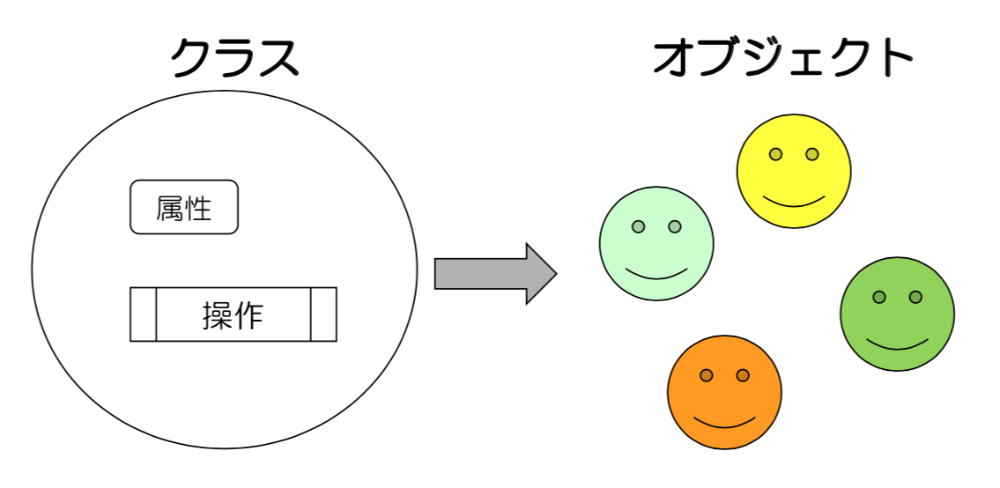
クラスを利用するには以下の手順が必要です。
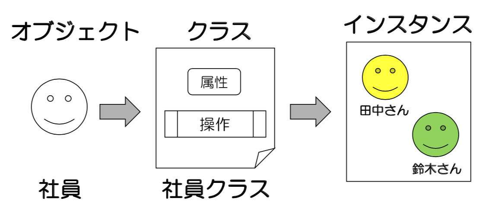
ここではユーザー情報を扱いたいとしましょう。
クラスを作成するにはclassを使用します。
class User:
pass
クラスにメンバを定義する前に、コンストラクタと呼ばれる特殊なメソッドする必要があります。
コンストラクタは名前が決まっており、__init__(self)です。
class User:
def __init__(self):
pass
コンストラクタはクラスをインスタンス化した時に呼ばれる、メソッドです。 主にインスタンスの初期化のために利用されます。
クラスに属性を追加する場合は、self.属性名を定義します。
ユーザーに必要な属性は、姓、名、年齢としましょう。
class User:
def __init__(self, last_name, first_name, age):
self.last_name = last_name
self.first_name = first_name
self.age = age
selfについて Pythonではインスタンスメソッドを定義する時に、引数に必ずselfを記述するというルールがあります。 selfは自分自身のオブジェクトを意味します。
クラスに操作を追加する場合は、クラス内にメソッドを定義します。 ここではユーザーのフルネームを取得するメソッドを定義してみましょう。
class User:
def __init__(self, last_name, first_name, age):
self.last_name = last_name
self.first_name = first_name
self.age = age
def get_full_name(self):
return self.last_name + " " + self.first_name
これでユーザークラスを定義できました。
クラスを定義したら次にインスタンスを生成する必要があります。 インスタンスの生成は以下のようにします。
user = User("Tanaka", "Taro", 20)
Userの引数はコンストラクタの引数に受け渡されます。その際、selfには自動的にインスタンス自身が代入され、それより後の引数に代入されます。 print関数を使用して、確認してみましょう。
# クラス定義
class User:
def __init__(self, last_name, first_name, age):
print(self) # <__main__.User object at 0x10482ee80>
print(first_name) # Tanaka
print(last_name) # Taro
print(age) # 20
self.last_name = last_name
self.first_name = first_name
self.age = age
def get_full_name(self):
return self.last_name + " " + self.first_name
# インスタンス化
user = User("Tanaka", "Taro", 20)
最後にクラスのメンバを利用してみましょう。
メンバを利用するにはインスタンス.メンバで指定します。
# クラス定義
class User:
def __init__(self, last_name, first_name, age):
self.last_name = last_name
self.first_name = first_name
self.age = age
def get_full_name(self):
return self.last_name + " " + self.first_name
# インスタンス化
user1 = User("Tanaka", "Taro", 20)
# メンバの利用
print(user1.first_name) # Tanaka
print(user1.last_name) # Taro
print(user1.age) # 20
print(user1.get_full_name()) # Tanaka Taro
# いくつでもインスタンス化できる
user2 = User("Suzuki", "Hanako", 21)
print(user2.first_name) # Suzuki
print(user2.last_name) # Hanako
print(user2.age) # 21
print(user2.get_full_name()) # Suzuki Hanako
クラスの役割は属性と操作を分類する（Classify）ことです。 クラスにはどういうメリットがあるのか、クラスを利用する場合と利用しない場合で比べてみましょう。 まず、クラスを利用しない場合の例をみてみましょう。 ユーザー情報を画面に出力するプログラムを考えます。
def get_full_name(last_name, first_name):
return last_name + " " + first_name
def show_two_users(user1_first_name, user1_last_name, user1_age,
user2_first_name, user2_last_name, user2_age):
print("Name : ", get_full_name(user1_last_name, user1_first_name))
print("Age : ", user1_age)
print("Name : ", get_full_name(user2_last_name, user2_first_name))
print("Age : ", user2_age)
user1_first_name = "Taro"
user1_last_name = "Tanaka"
user1_age = 20
user2_first_name = "Hanako"
user2_last_name = "Suzuki"
user2_age = 21
show_two_users(user1_first_name, user1_last_name, user1_age,
user2_first_name, user2_last_name, user2_age)
引数や関数が多くて非常に煩雑な様子がわかると思います。 Userクラスを利用してこれを整理してみましょう。
# クラス定義
class User:
def __init__(self, last_name, first_name, age):
self.last_name = last_name
self.first_name = first_name
self.age = age
def get_full_name(self):
return self.last_name + " " + self.first_name
def show_two_users(user1, user2):
print("Name : ", user1.get_full_name())
print("Age : ", user1.age)
print("Name : ", user2.get_full_name())
print("Age : ", user2.age)
# インスタンス化
user1 = User("Tanaka", "Taro", 20)
user2 = User("Suzuki", "Hanako", 21)
show_two_users(user1, user2)
クラスのおかげで、ユーザーの情報をまとめて一つとして扱えるようになりました。 それにより、引数も減り、かなり簡潔になったのではないでしょうか。 情報量が多ければ多いほどクラスの効果は大きくなります。 実際のプログラムではUserクラスを別ファイルに記述するのが一般的です。 そうすることで更に簡潔にプログラミングできるようになるでしょう。
今まで学習してきた属性はインスタンスに紐づいており、インスタンスを生成しないと使用できませんでした。 クラス属性を定義することでインスタンスに依存しない属性をクラスに持たせることができます。
class User:
# クラス属性
count = 0
def __init__(self, last_name, first_name, age):
self.last_name = last_name
self.first_name = first_name
self.age = age
__class__.count += 1
def get_full_name(self):
return self.last_name + " " + self.first_name
# インスタンスを生成せずに利用できる
print(User.count) # 0
user1 = User("Tanaka", "Taro", 20)
user2 = User("Suzuki", "Hanako", 21)
print(User.count) # 2
クラスメソッドはインスタンスに依存しないメソッドです。
@classmethodを使用して定義します。
class User:
# クラス属性
count = 0
def __init__(self, last_name, first_name, age):
self.last_name = last_name
self.first_name = first_name
self.age = age
__class__.count += 1
def get_full_name(self):
return self.last_name + " " + self.first_name
# クラスメソッド
@classmethod
def get_count(cls):
print("Number of user is ", cls.count)
# インスタンスを生成せずに利用できる
User.get_count() # Number of user is 0
user1 = User("Tanaka", "Taro", 20)
user2 = User("Suzuki", "Hanako", 21)
User.get_count() # Number of user is 2
インスタンスメソッドの引数にselfを指定するのと同じように、クラスメソッドの引数にはclsを指定します。clsにはクラスの情報が代入されます。
スタティックメソッドはクラスメソッドと同様にインスタンスに依存しないメソッドです。 ただしスタティックメソッドは、引数にクラスの情報が代入されません。 そのためクラスにも依存しないメソッド、関数に近いものと考えてよいでしょう。
class Math:
@staticmethod
def add(x, y):
return x + y
@staticmethod
def multi(x, y):
return x * y
# (2 + 3) * 5
print(Math.multi(Math.add(2, 3), 5))
継承の仕組みを利用することで、既存のクラスを拡張したクラスを定義することができます。
継承を利用するにはclass クラス名(継承元クラス)とします。
ユーザークラスを継承した社社員クラスを定義してみましょう。
社員クラスはユーザー情報の他に社員番号（EMPNO）を持つとします。
class User:
def __init__(self, last_name, first_name, age):
self.last_name = last_name
self.first_name = first_name
self.age = age
def get_full_name(self):
return self.last_name + " " + self.first_name
class Employee(User):
def __init__(self, empno, first_name, last_name, age):
self.empno = empno
# 親のコンストラクタ呼び出し
super().__init__(first_name, last_name, age)
def work(self):
print(self.get_full_name + " working...")
継承元のクラス（User）を親クラスやスーパークラスと呼び、継承先のクラス（Employee）を子クラスやサブクラスと呼びます。 子クラスでは、親のインスタンスを参照したい場合は、superメソッドを使用します。 子クラスは親クラスの属性と操作を継承します。
class User:
def __init__(self, last_name, first_name, age):
self.last_name = last_name
self.first_name = first_name
self.age = age
def get_full_name(self):
return self.last_name + " " + self.first_name
class Employee(User):
def __init__(self, empno, first_name, last_name, age):
self.empno = empno
# 親のコンストラクタ呼び出し
super().__init__(first_name, last_name, age)
def work(self):
print(self.get_full_name() + " working...")
emp = Employee("001", "Tanaka", "Taro", 20)
# 親クラスの属性
print(emp.last_name) # Tanaka
print(emp.first_name) # Taro
print(emp.age) # 20
# 親クラスの操作
print(emp.get_full_name()) # Tanaka Taro
# 自クラスの属性
print(emp.empno) # 001
# 自クラスの操作
emp.work() # Tanaka Taro working...
親クラスで定義されたメソッドを子クラスで再定義することをオーバーライドと言います。
class User:
def __init__(self, last_name, first_name, age):
self.last_name = last_name
self.first_name = first_name
self.age = age
def get_full_name(self):
return self.last_name + " " + self.first_name
class Employee(User):
def __init__(self, empno, first_name, last_name, age):
self.empno = empno
super().__init__(first_name, last_name, age)
def work(self):
print(super().get_full_name() + " working...")
def get_full_name(self):
return "Name : " + self.last_name + " " + self.first_name
emp = Employee("001", "Tanaka", "Taro", 20)
print(emp.get_full_name()) # Name : Tanaka Taro
多くのオブジェクト指向言語で多重継承は許可していませんが、Pythonでは多重継承を許しています。
class Robot:
def charge(self):
print("charging...")
class Dog:
def bark(self):
print("barking...")
class RobotDog(Robot, Dog):
pass
bob = RobotDog()
bob.charge() # charging...
bob.bark() # barking...
親クラス内に同一メソッドが存在する場合は、先に記述したクラスのメソッドが優先されます。
この章ではエラー処理について学習します。
エラーを意図的に発生させてみましょう。
points = [80, 75, 90, 100]
# エラーが発生
point = points[4]
# 以降の処理はスキップされる
print("Hello")
# IndexError: list index out of range
上記のコードではpoint = points[4]で、リストの要素外にアクセスしており、そこで処理が終了してしまっています。そのため、print("Hello")は実行されません。
そこで、エラーが発生しそうなコードをtry-exceptで囲むことで、エラーを補足することができます。
points = [80, 75, 90, 100]
try:
# エラーが発生
point = points[4]
# 以降の処理はスキップされる
print("Hello")
except:
# try-except内でエラー発生時のみ実行される
print("Need a points between 0 and ", len(points) - 1)
# 以降の処理はスキップされない
print("Hello")
上記のコードではtry-except内でエラーが発生した場合、それがどのようなエラーでも同じメッセージが表示されてしまいます。それでは、ユーザーに詳細な情報を届けることができません。エラーの種類によって処理を分けたい場合は、except [exceptiontype] as [name]という記述をします。
points = [80, 75, 90, 100]
while(True):
val = input('input number')
if(val == "q"):
break
try:
point = points[int(val)]
print(point)
except IndexError as err:
# try-except内でIndexError発生時のみ実行される
print("Need a points between 0 and ", len(points) - 1)
except Exception as other:
# try-except内でIndexError以外のエラー発生時のみ実行される
print("something else", other)
input関数はユーザーの入力を待つ関数です。戻り値はユーザーの入力値を文字列型で返します。 inputをwhileで繰り返すことで、何度もユーザーの入力を待つことができます。
エラーの種類に関しては公式ドキュメントを参考にしてください。
https://docs.python.org/3.7/library/exceptions.html#exception-hierarchy
try-exceptでエラーの補足ができることがわかりました。 これにelseを追加して、エラーが発生しなかった場合の処理を追加することができます。
try:
result = 1 / 0
except ZeroDivisionError:
print("dvided by 0")
else:
# エラーが発生しなかった場合のみ実行される
print("finished")
else句はエラーが発生しなかった場合のみ実行されます。以下のように書き換えてみましょう。
try:
result = 1 / 1
except ZeroDivisionError:
print("dvided by 0")
else:
# エラーが発生しなかった場合のみ実行される
print("finished")
except句はエラー発生時、else句はエラー非発生時に実行されました。finally句を追加することで、エラーが発生しても発生しなくても実行する処理を記述することができます。
try:
result = 1 / 1
finally:
print("finally")
エラーが発生する場合も記述してみましょう。
try:
result = 1 / 0
finally:
print("finally")
いずれの場合でもfinallyが出力されたと思います。 また、間にexcept句を記述することもできます。
try:
result = 1 / 1
except ZeroDivisionError:
print("dvided by 0")
finally:
print("finally")
エラーを独自に定義するにはExceptionクラスを継承したクラスを作成します。
class OverAgeException(Exception):
pass
ages = [10, 8 , 9, 19]
try:
for age in ages:
if(age > 15):
raise OverAgeException(age)
except OverAgeException as err:
print("only under 15 years old ", age)
この章ではモジュール化について学習します。
複雑なシステム機能を相互依存の強い部品同士で構成するのではなく、交換可能で独立した部品同士で構成するようにすることをモジュール化と言います。わかりやすく言い換えると、機能ごとに別ファイルに分類しましょうと言うことです。
計算機能を定義したcalculator.pyと、計算を実行するためのcalculator_main.pyファイルを別々に作成してみましょう。まず、以下の内容でcalculator.pyを作成します。
def add(x, y):
return x + y
次にcalculator_main.pyを作成します。別モジュールを使用するにはインポートという作業を行う必要があります。import モジュール名でインポートできます。
import calculator
print(calculator.add(3, 4))
モジュールを作成したら、コマンドラインからcalculator_main.pyを実行します。
% python calculator_main.py
7
また、また、インポート文をfrom モジュール名 import インポート対象とすることで、参照時に省略が可能です。
from calculator import add
print(add(3, 4))
モジュール化が進みファイルの数が増えてくると、今度はファイルの管理が難しくなってきます。ファイルが増えてきたらフォルダ分けしてファイルを管理しますよね。それと同様にしてモジュールもフォルダ分けして管理するようにします。このフォルダのことをパッケージと呼びます。先ほどの2ファイルを以下のようにフォルダ分けしてみましょう。
├── calculator_main.py
└── exercise
└── calculator.py
以下の内容でexercise.greeterモジュールを作成してください。
def greet():
message = "Hello"
print(message)
greet()
[ディレクトリ構成]
├── calculator_main.py
└── exercise
├── calculator.py
└── greeter.py
greeterモジュールをcalculator_mainモジュールにインポートしてみましょう。
from exercise.calculator import add
import exercise.greeter
print(add(3, 4))
作成できたら実行します。
% python calculator_main.py
Hello
7
calculator_mainモジュールではgreet関数は呼び出していませんが、Helloが出力されてしまっています。このようにグローバルスコープに書かれた内容はインポート時に自動的に実行されてしまいます。これを回避するには、スクリプト実行された場合のみgreet関数を呼び出すように、greeterモジュールを以下のように修正します。
def greet():
message = "Hello"
print(message)
if __name__ == '__main__':
greet()
修正したら実行します。
% python calculator_main.py
7
追記されたname変数は特殊な変数で、import時にはモジュール名が自動的に代入され、スクリプト実行時にはmainが代入されます。 そのため、greeterモジュールをスクリプト実行するとHelloが出力されます。
% python exercise/greeter.py
Hello
この章では文字列操作について学習します。
フォーマット文字列は%を使用し文字列を生成する方法です。
str1 = "%sは%sです" %("cat", "mammals")
str2 = "%(name)sは%(type)sです" %{"name":"dog", "type":"mammals"}
print(str1) # 猫は哺乳類です
print(str2) # 犬は哺乳類です
フォーマットの記号の詳細は公式ドキュメントを参照してください。
https://docs.python.org/3.7/library/string.html#format-string-syntax
文字列クラスのformatメソッドを使用する方法もあります。
str1 = "{0}は{1}です".format("cat", "mammals")
d = {"name":"dog", "type":"mammals"}
str2 = "{name}は{type}です".format(**d)
print(str1)
print(str2)
上記の**dはディクショナリ型を展開した上でformatメソッドに渡しています。
文字列内から文字を検索する方法をみてみましょう。 Pythonではリストの時に学習した、in演算子を使うことで文字列も検索することができます。
exist = "cat" in "cat is mammals"
print(exist) # True
検索した文字列が何番目に初めて出てくるかを調べることができます。 indexメソッドまたはfindメソッドを使用します。
index1 = "cat is mammals".index("is")
print(index1) # 4
index2 = "cat is mammals".index("dog") # ValueErrorが発生する
indexメソッドは検索文字列が存在しない場合はValueErrorが発生します。 findメソッドは検索文字列が存在しない場合、-1を返します。
index1 = "cat is mammals".find("is")
print(index1) # 4
index2 = "cat is mammals".find("dog")
print(index2) # -1
文字列が指定の文字列で開始されているか調べることができます。 startswithメソッドを使用します。
start_check1 = "cat is mammals".startswith("cat")
start_check2 = "cat is mammals".startswith("is")
print(start_check1) # True
print(start_check2) # False
文字列が指定の文字列で終了されているか調べることができます。 endswithメソッドを使用します。
end_check1 = "cat is mammals".endswith("cat")
end_check2 = "cat is mammals".endswith("als")
print(end_check1) # False
print(end_check2) # True
文字列がalphabeticのみで構成されているか確認することができます。 isalphaメソッドを使用します。
alpha_check1 = "abc".isalpha()
alpha_check2 = "1ab".isalpha()
alpha_check3 = "あa".isalpha()
print(alpha_check1) # True
print(alpha_check2) # False
print(alpha_check3) # True
文字列がalphabetic、または、数値で構成されているか確認することができます。 isalnumメソッドを使用します。
alnum_check1 = "abc".isalnum()
alnum_check2 = "1ab".isalnum()
alnum_check3 = "あa１".isalnum()
print(alnum_check1) # True
print(alnum_check2) # True
print(alnum_check3) # True
文字列が数値のみで構成されているか確認することができます。 isdigitメソッド、または、isnumericメソッドを使用します。
digit_check1 = "123.5".isdigit()
digit_check2 = "１２３".isdigit()
digit_check3 = "-3".isdigit()
digit_check4 = "ⅴ".isdigit()
digit_check5 = "ⅴ".isnumeric()
print(digit_check1) # False
print(digit_check2) # True
print(digit_check3) # False
print(digit_check4) # False
print(digit_check5) # True
文字列を指定文字列で分割することができます。 splitメソッドを使います。 戻り値は分割された文字列のリストで返ってきます。
split_strings1 = "a,b,c".split(",")
split_strings2 = "ab cd ef".split(" ")
split_strings3 = "ab cd ef".split(",")
print(split_strings1) # ['a', 'b', 'c']
print(split_strings2) # ['ab', 'cd', 'ef']
print(split_strings3) # ['ab cd ef']
文字列を指定文字列で置換することができます。 replaceメソッドを使います。
reaplaced1 = "Hello World".replace("l", "zz")
reaplaced2 = "Hello World".replace(" ", ",")
print(reaplaced1) # Hezzzzo Worzzd
print(reaplaced2) # Hello,World
この章では正規表現について学習します。
正規表現とは文字列の集合を一つの文字列で表現する方法です。多くの場合、文字列の検索や入力チェック 置換などで利用されます。
主な正規表現の特殊文字には以下のようなものがあります。
[開始/終了] |記述方法|内容| |-|-| |^|文字列の先頭| |$|文字列の末尾|
[文字種]
| 記述方法 | 内容 |
|---|---|
| . | 改行以外の任意の文字 |
| [...] | 文字の集合を指定 |
| [^...] | 文字の集合の補集合要素 |
| ¥d | 任意の10進数[0-9] |
| ¥D | 任意の非数字文字[^0-9] |
| ¥w | 任意の英数文字および下線[a-zA-Z0-9_] |
| ¥W | 任意の非英数文字[^a-zA-Z0-9_] |
| ¥s | 任意の空白文字 |
| ¥S | 任意の非空白文字 |
[繰り返し回数]
| 記述方法 | 内容 |
|---|---|
| {m} | m回の繰り返し |
| {m, n} | m回からn回の繰り返し |
| + | 直前にある文字が1回以上繰り返される |
| * | 直前にある文字が0回以上繰り返される |
正規表現を使用して検索を行うには、reモジュールのsearch関数を使用します。 正規表現にマッチした場合は正規表現オブジェクトを返し、マッチしない場合はNoneを返します。
import re
'''
^$d : 数値で始まり
* : 0回以上繰り返し
$ : それが最後の文字
'''
print(re.search("\d+", "1234")) # <re.Match object; span=(0, 4), match='1234'>
print(re.search("\d+", "1234").group()) # 1234
print(re.search("\d+", "abc")) # None
print(re.search("\d+", "123abc")) # <re.Match object; span=(0, 3), match='123'>
print(re.search("\d+", "ab123cd")) # <re.Match object; span=(2, 5), match='123'>
正規表現を使用して入力チェックを行うには、reモジュールのmatch関数を使用します。 match関数はsearch関数とよく似ています。search関数は文字列中のどこか一致するものを探すのに対し、match関数は文字列の先頭から正規表現と一致しているか判定します。
import re
print(re.match("\d+", "1234")) # <re.Match object; span=(0, 4), match='1234'>
print(re.match("\d+", "123abc")) # <re.Match object; span=(0, 3), match='123'>
print(re.match("\d+", "ab123cd")) # None
入力チェックにはmatch関数のほうがふさわしいでしょう。
正規表現を使用して置換を行うには、reモジュールのsub関数を使用します。 正規表現にマッチした箇所を指定文字列に置き換えます。
import re
print(re.sub("\d{2}", "XX", "ab123c45de")) # abXX3cXXde
この章では日時操作について学習します。
datetimeモジュールは日付や時間を操作するためのモジュールです。 まずは現在日時を取得してみましょう。nowメソッドを使用します。
from datetime import datetime
now = datetime.now()
print(now) # 2018-12-01 12:47:30.639691
指定した日時のdatetimeインスタンスを生成してみましょう。 コンストラクタに日時分秒を指定することで生成します。
from datetime import datetime
d1 = datetime(2018, 12, 2)
d2 = datetime(2018, 12, 2, 1, 2, 3)
print(d1) # 2018-12-02 00:00:00
print(d2) # 2018-12-02 01:02:03
datetimeインスタンスから曜日を取得することができます。 weekdayメソッドを使用します。
from datetime import datetime
d = datetime(2018, 12, 2)
w = d.weekday()
print(w) # 6
曜日は数値で返ってきます。数値と曜日は以下のように対応しています。
| 数値 | 曜日 |
|---|---|
| 0 | 月曜日 |
| 1 | 火曜日 |
| 2 | 水曜日 |
| 3 | 木曜日 |
| 4 | 金曜日 |
| 5 | 土曜日 |
| 6 | 日曜日 |
日時を指定フォーマットの文字列に変換することができます。 strftimeメソッドを使用します。
from datetime import datetime
d = datetime(2018, 12, 2)
date_string = d.strftime("%Y/%m/%d")
print(date_string) # 2018/12/02
フォーマットの記号の詳細は公式ドキュメントを参照してください。
https://docs.python.org/3.7/library/datetime.html#strftime-and-strptime-behavior
反対に文字列からdatetimeインスタンスを生成することができます。 strptimeメソッドを使用します。
from datetime import datetime
d = datetime.strptime("2018/12/2", "%Y/%m/%d")
print(d) # 2018-12-02 00:00:00
日付の加減算を行うにはtimedeltaクラスを使用します。
from datetime import datetime, timedelta
d = datetime.now()
oneday = timedelta(days = 1)
yesterday = d - oneday
print(yesterday) # 2018-11-30 13:14:42.034219
日付までで時分秒の情報が必要ない場合はdateクラスを使用しましょう。
from datetime import date
d1 = date.today()
d2 = date(2018, 12, 2)
print(d1)
print(d2)
この章ではファイル操作について学習します。
open関数を使用してファイルをプログラム上で開くことができます。 先にファイルを作成しましょう。users.csvというファイル名でカレントディレクトリに以下のファイルを作成します。
user1,pass1
user2,pass2
user3,pass3
次にopen関数を使用してusers.csvを読み込んでみましょう。
f = open("users.csv", "r", encoding="utf-8")
text = f.read()
print(text)
'''
user1,pass1
user2,pass2
user3,pass3
'''
f.close()
open関数の第二引数のrはファイルを開くときのモードです。以下のような対応があります。
| 文字 | 意味 |
|---|---|
| r | 読み込み（省略可) |
| w | 書き込み |
| a | 追加書き込み |
| b | バイナリモード |
ファイルを閉じるにはcloseメソッドを使用します。
ファイルの内容を行ごとに読み込むこともできます。 readlinesメソッドを使用します。
f = open("users.csv", encoding="utf-8")
for line in f.readlines():
print(line)
'''
user1,pass1
user2,pass2
user3,pass3
'''
f.close()
ファイルにデータを書き込むにはwriteメソッドを使用します。
f = open("writing.txt", "w", encoding="utf-8")
f.write("Hello World!")
f.close()
ファイルが作成されているので確認してみましょう。
% cat writing.txt
Hello World!
writelinesメソッドを使用して、データを行毎に書き込むことができます。
f = open("writing.txt", "w", encoding="utf-8")
f.writelines("Hello World 1\r\n")
f.writelines("Hello World 2\r\n")
f.writelines("Hello World 3\r\n")
f.close()
改行が必要な場合は改行コードも記述する必要があります。
with文を使用することで、処理ブロックを抜けた時に自動的にファイルが閉じるようになります。 ファイルの閉じ忘れなどを防ぐことができます。
with open("users.csv", "r", encoding="utf-8") as f:
print(f.read())
CSVとはComma-Separated Valuesの略で、カンマ区切りのファイルのことです。 csvモジュールはCSVファイルを扱うためのモジュールです。 CSVファイルの読み込みをしてみましょう。
import csv
with open("users.csv", "r", encoding="utf-8") as f:
reader = csv.reader(f)
for row in reader:
print(row)
次にCSVファイルを作成してみましょう。CSVファイルに書き込むリストを用意します。
import csv
new_users = [
["user4", "pass4"],
["user5", "pass5"],
["user6", "pass6"]
]
with open("users.csv", "a", encoding="utf-8") as f:
writer = csv.writer(f)
writer.writerows(new_users)
users.csvファイルを確認してみましょう。以下の内容が書き込まれていると思います。
user1,pass1
user2,pass2
user3,pass3
user4,pass4
user5,pass5
user6,pass6
JSONとはJavaScript Object Notationの略で、キーと値をコロン、データをカンマで区切ったファイルのことです。 jsonモジュールはJSONファイルを扱うためのモジュールです。 JSONファイルを作成してみましょう。JSONファイルに書き込むディクショナリを用意します。
import json
users = {"first_name" : "Taro",
"last_name": "Tanaka",
"age" : 20}
with open("users.json", "w", encoding="utf-8") as f:
json.dump(users, f)
users.jsonファイルが作成され、以下の内容が書き込まれたと思います。
{"first_name": "Taro", "last_name": "Tanaka", "age": 20}
次にJSONファイルを読み込みます。
import json
with open("users.json", "r", encoding="utf-8") as f:
user = json.load(f)
print(user) # {'first_name': 'Taro', 'last_name': 'Tanaka', 'age': 20}
osモジュールを読み込んで、パスを生成することができます。 join関数を使用します。
from os import path
p = path.join("path1", "path2", "path3")
print(p) # path1/path2/path3
abspath関数で絶対パスを取得することができます。
from os import path
p = path.abspath("users.csv")
print(p) # ~/Learning/python_introduction/text/sources/12/users.csv
split関数を使用して、パスを分割することができます。
from os import path
p = path.split("~/Learning/python_introduction/text/sources/12/users.csv")
print(p) # ('/Learning/python_introduction/text/sources/12', 'users.csv')
exists関数を使用して、ファイル、ディレクトリが存在するか確認することができます。
from os import path
exists1 = path.exists("users.csv")
exists2 = path.exists("XXX.csv")
print(exists1) # True
print(exists2) # False
remove関数を使用してファイルを削除することができます。
import os
os.remove("writing.txt")
ファイル同様、ディレクトリの作成と削除ができます。 作成する場合は、mkdir関数を使用します。 また、listdir関数でディレクトリの中身を確認することができます。
import os
os.mkdir("dir1")
print(os.listdir("./")) # ['users.csv', 'dir1']
削除する場合は、rmdir関数を使用します。
import os
os.rmdir("dir1")
この章ではWebスクレイピングについて学習します。
Webスクレイピングとは、プログラムを使ってWebからコンテンツをダウンロードして処理することです。 以下のモジュールを使用します。
webbrowserモジュールはブラウザを操作します。
import webbrowser
webbrowser.open("http://python.org")
入力した住所のGoogleMapを開くようにしてみましょう。
import webbrowser
while(True):
address = input('input address')
print(address)
webbrowser.open("https://www.google.co.jp/maps/place/" + address)
requestsモジュールはHTTPリクエストを送信するためのモジュールです。 Python付属のモジュールでないため、インストールする必要があります。 ここではpipというパッケージマネージャーを使用してインストールします。
% pip install requests
ではrequestsモジュールを使用してリクエストを送信してみましょう。
import requests
res = requests.get("http://python.org")
print(type(res))
print(res.text)
print(res)
HTMLが取得できたと思います。
HTTPリクエストは様々な理由から常に正常にレスポンスが帰ってくるとは限りません。そのため、エラーのチェックが必要になります。raise_for_statusメソッドは正常にレスポンスであれば何もせず、異常がある場合のみ、例外を発生させます。
import requests
res = requests.get("http://python.org")
res.raise_for_status()
この状態では何も起きません。あえてURLを間違えてみましょう。
import requests
res = requests.get("http://python.xxx")
res.raise_for_status()
BeautifulSoupはHTMLから情報を抽出するモジュールです。 requestsモジュール同様、Pythonに付属していないのでpipでインストールします。
% pip install beautifulsoup4
WebサイトをBeautifulSoupに読み込ませてみましょう。
import requests, bs4
res = requests.get("http://python.org")
res.raise_for_status()
soup = bs4.BeautifulSoup(res.text)
print(type(soup))
BeautifulSoupインスタンスが生成されたので、selectメソッドを使用して、要素を探します。 要素の検索にはCSSセレクタを使用します。メタタグを取得してみましょう。
import requests, bs4
res = requests.get("http://python.org")
res.raise_for_status()
soup = bs4.BeautifulSoup(res.text)
elems = soup.select("meta")
print(elems)
print(str(elems[0))
print(elems[0].attrs)
print(elems[0].get("charset"))
これを応用して、Yahooの画像検索の結果を収集してみましょう。
import requests, bs4, os
# 検索キーワードはApple
keyword = "Apple"
# 画像を保存するフォルダを作成
os.mkdir(keyword)
# 画像検索の結果のURLにリクエストを送信
res = requests.get("https://search.yahoo.co.jp/image/search?p={0}&ei=UTF-8&fr=top_ga1_sa".format(keyword))
res.raise_for_status()
# レスポンスからimgタグを取得する
soup = bs4.BeautifulSoup(res.text)
elems = soup.select("img")
# imgタグの個数だけ繰り返す
count = 0
for elem in elems:
# imgタグのsrc属性から画像URLを取得
image_url = elem.get("src")
print("Downloading... {0}".format(image_url))
# 画像URLにリクエストを送る
image_res = requests.get(image_url)
image_res.raise_for_status()
# 画像ファイルの保存名生成
filename = os.path.join(keyword, str(count) + ".png")
count += 1
# 画像ファイル保存（画像はバイナリデータなので"wb"
with open(filename, "wb") as f:
# レスポンスを保存する場合は、iter_contentメソッドを使用し、チャンクごとに保存する
# 各チャンクはバイトデータ型で、最大バイト数を指定する（10KB)
for chunk in image_res.iter_content(100000):
f.write(chunk)